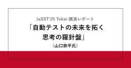

SHIFT Group 技術ブログ
https://note.shiftinc.jp
お客様の売れるソフトウェアサービス／製品づくりを支援する株式会社SHIFTの公式技術ブログ。AI、ソフトウェア開発・運用、マーケティングなどあらゆる立場から携わるSHIFTグループ従業員が得た独自のナレッジを発信しています。※本アカウントに部分的にAI活用した記事が含まれます。
フィード
量子AIの「不毛な高原」脱出作戦
SHIFT Group 技術ブログ
『先端技術ナビゲーター：量子AI・次世代技術の評価と展望』量子技術、次世代AIなど、実用化フェーズ手前の先端技術について、技術的な深掘り調査と実装可能性の評価を行うマガジンです。学術論文の体系的レビューを通じて、技術の現在地、解決すべき課題、実用化までのマイルストーンを明確化。大手企業が中長期的な技術ロードマップを策定する際に、「この技術をいつ、どう取り入れるべきか」の判断を支援する知見を提供します。続きをみる
3日前

JaSST'25 Tokai 講演レポート「自動テストの未来を拓く思考の羅針盤」（山口鉄平氏）
SHIFT Group 技術ブログ
こんにちは。CATエヴァンジェリスト・石井優でございます。続きをみる
5日前
《お礼と開催報告》2/26 中東エンタメビジネスセミナー＆SHIFT Arabia設立記念ネットワーキングパーティー
SHIFT Group 技術ブログ
اَلسَّلَامُ عَلَيْكُمْSHIFT Arabia 代表の鈴木（موش سوزوكي）です。先日2月26日に、SHIFT本社がある麻布台ヒルズにて「中東エンタメビジネス セミナー＆SHIFT Arabia 設立記念ネットワーキングパーティー」を開催しました。続きをみる
5日前

アニメから得た学びを発表会 第20回目 登壇・参加レポート
SHIFT Group 技術ブログ
こんにちは。SHIFTのプロジェクトマネージャー／プロダクトエンジニアの髙橋です。3月6日（金）に「アニメから得た学びを発表会 第20回目」で登壇をしました。アニメから得た学びを発表会は、エンジニアニメとも呼ばれています。私はこれまで、同コミュニティの同人誌版や劇場版、アドベントカレンダーなどを通じて、その活動に触れてきました。一方で、通常回への参加はなかなか叶っておらず、今回ようやく参加できたことに加え、運営のお手伝いや登壇までできたことを大変嬉しく思っています。本記事では、イベントの概要と、登壇内容の要点、他セッション、懇親会で得た学びを、整理して共有します。続きをみる
8日前
今週の新着ブログ7本公開！_AIエージェントと基幹システムの連携_未経験でスクラムマスターに ほか(2026.3.6~3.12)
SHIFT Group 技術ブログ
こんにちは！「SHIFTグループ技術ブログ」編集部です。お役立ち記事を発信していますので、ぜひご注目ください！！本ブログは、IT技術だけでなくSHIFTグループのあらゆる知見やノウハウを広義の“技術”とし、入社歴や部署の垣根を超えて従業員が公式ブロガーとして記事を執筆しています。続きをみる
9日前
AIの「もっともらしい嘘」を量子力学で見抜く
SHIFT Group 技術ブログ
『先端技術ナビゲーター：量子AI・次世代技術の評価と展望』量子技術、次世代AIなど、実用化フェーズ手前の先端技術について、技術的な深掘り調査と実装可能性の評価を行うマガジンです。学術論文の体系的レビューを通じて、技術の現在地、解決すべき課題、実用化までのマイルストーンを明確化。大手企業が中長期的な技術ロードマップを策定する際に、「この技術をいつ、どう取り入れるべきか」の判断を支援する知見を提供します。続きをみる
10日前
今週の新着ブログ 4本_テラキャンAIコース提供開始_物理学×生成AIの最前線「GenAdS」と「GenPhys」ほか(2026.2.27~2026.3.5)
SHIFT Group 技術ブログ
こんにちは！「SHIFTグループ技術ブログ」編集部です。お役立ち記事を発信していますので、ぜひご注目ください！！本ブログは、IT技術だけでなくSHIFTグループのあらゆる知見やノウハウを広義の“技術”とし、入社歴や部署の垣根を超えて従業員が公式ブロガーとして記事を執筆しています。続きをみる
16日前
時空の幾何学がAIの「脳」になる？物理学×生成AIの最前線「GenAdS」と「GenPhys」の衝撃
SHIFT Group 技術ブログ
『先端技術ナビゲーター：量子AI・次世代技術の評価と展望』量子技術、次世代AIなど、実用化フェーズ手前の先端技術について、技術的な深掘り調査と実装可能性の評価を行うマガジンです。学術論文の体系的レビューを通じて、技術の現在地、解決すべき課題、実用化までのマイルストーンを明確化。大手企業が中長期的な技術ロードマップを策定する際に、「この技術をいつ、どう取り入れるべきか」の判断を支援する知見を提供します。続きをみる
16日前
AI技術者（IT技術者）の仕事とは｜テラキャンAI_AI技術者コース《無料教材》
SHIFT Group 技術ブログ
本記事では、「テラキャンAI AI技術者コース」で卒業後の一つの目標である「AI技術者」になることにおいて重要な、そもそもITの仕事とは何かをご紹介します。続きをみる
18日前
【AI革命】ITの仕事はどのように変わり、私たちはどう備えるべきか｜テラキャンAI_AI技術者コース《無料教材》
SHIFT Group 技術ブログ
本記事では、この「テラキャンAI AI技術者コース」で目指すAI技術者にとって知っておく必要がある、「AI革命」について記載しています。生成AIの登場によって、ITの仕事はどのように変わり、私たちはどう備えるべきかを知っていただく内容になっています。続きをみる
18日前